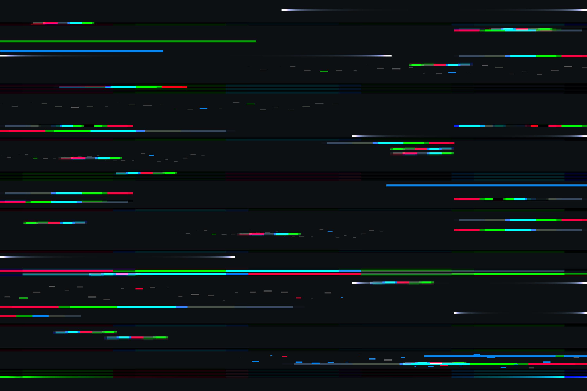
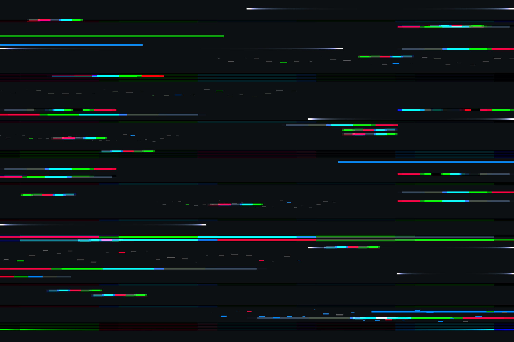

Cyberpunk
O Que é Cyberpunk?
Cyberpunk é um subgênero da ficção científica que se caracteriza por cenários urbanos futuristas, alta tecnologia, e uma sociedade decadente. Inspirado por obras literárias, filmes, e videogames, o cyberpunk explora temas como inteligência artificial, biotecnologia, e a luta pela sobrevivência em um ambiente governado por corporações opressivas.